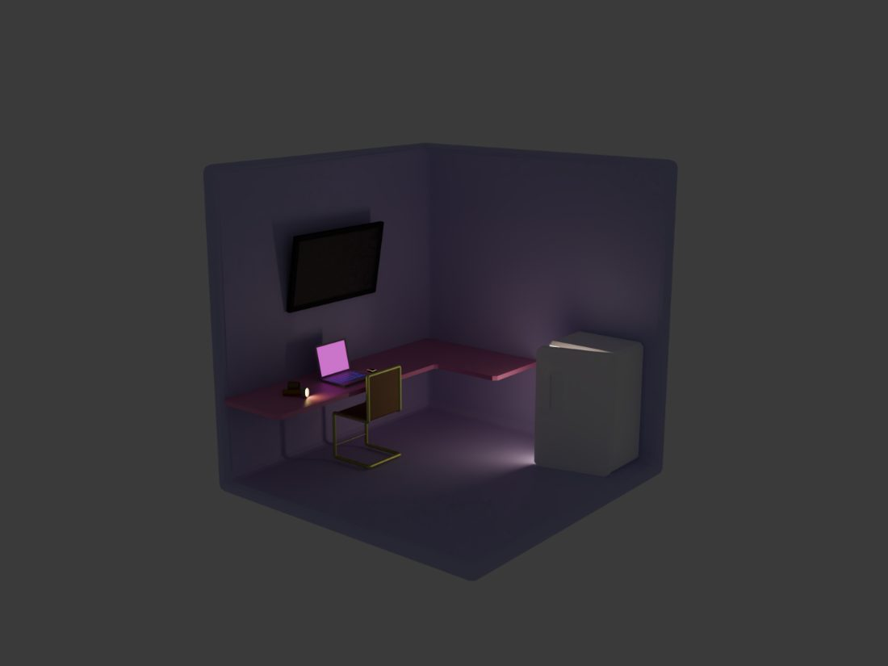
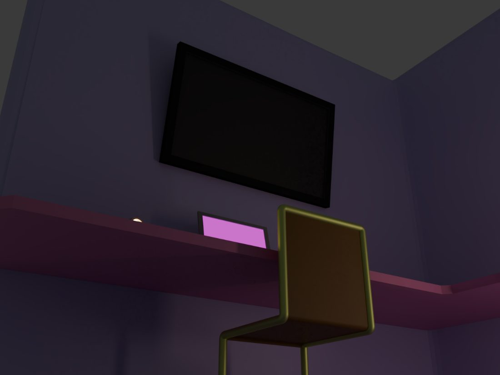
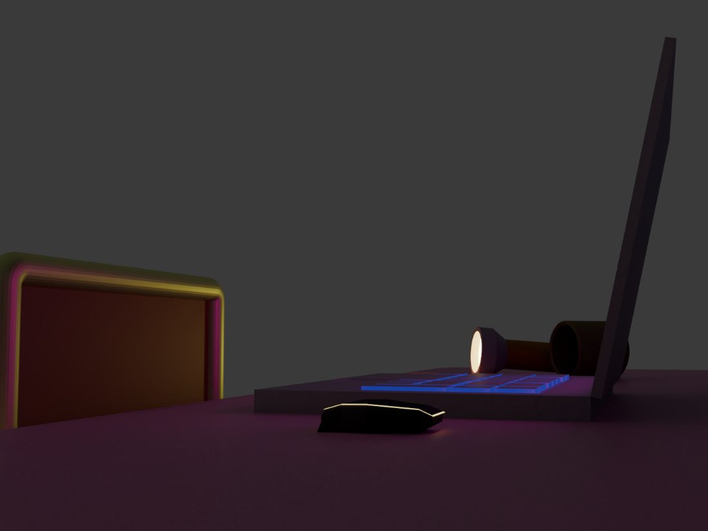
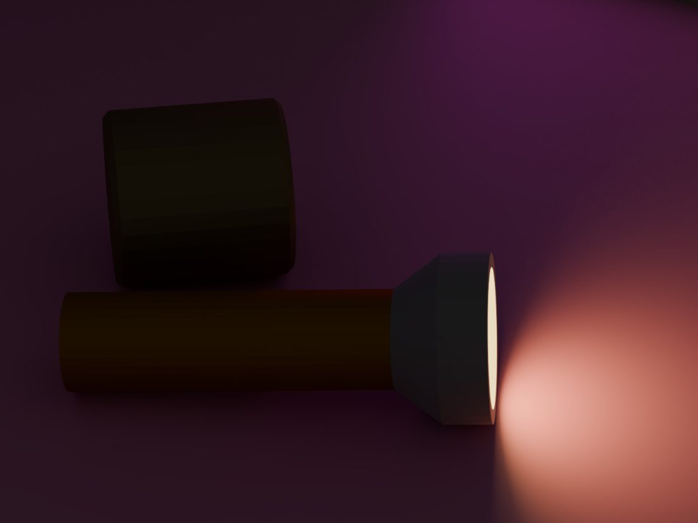
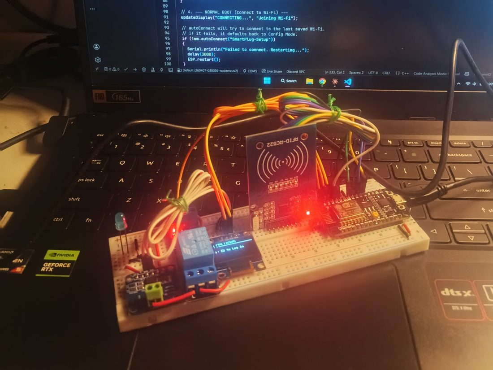
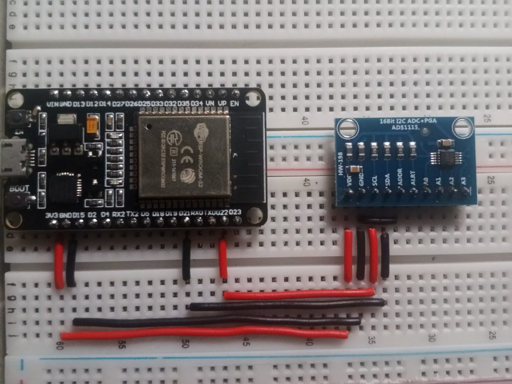
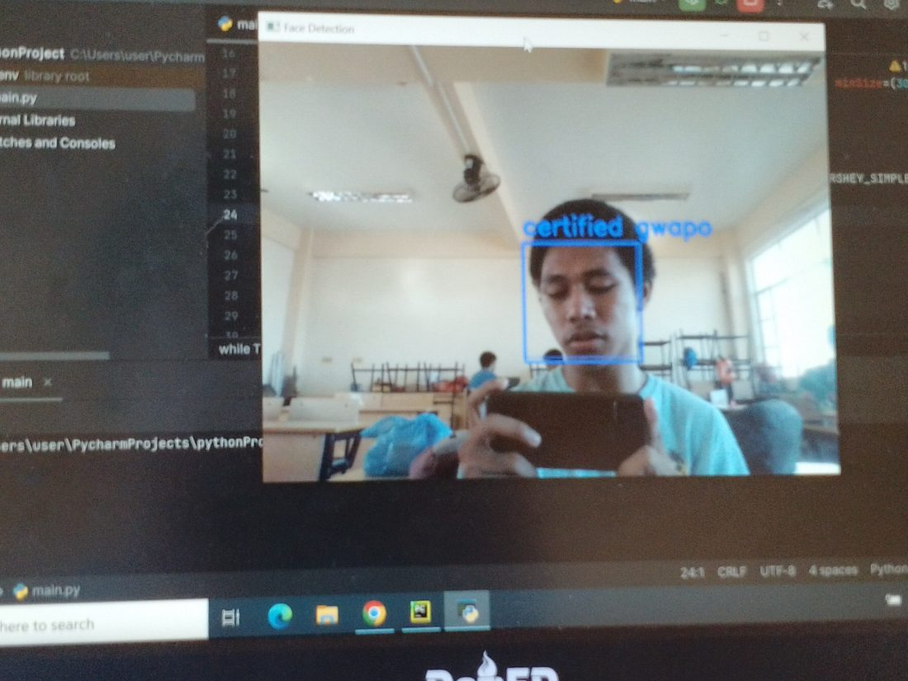
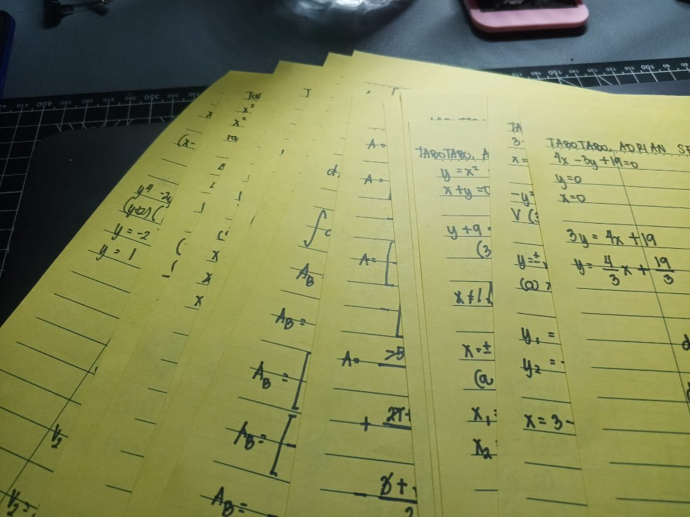
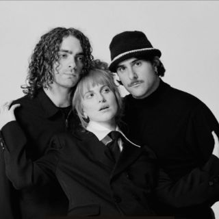
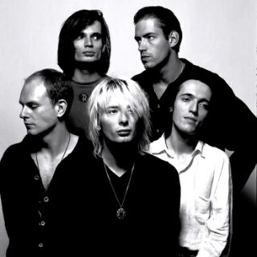

3D Modelling
A cutaway room built corner by corner — desk, TV, laptop, mug — and then lit entirely in pink.




Junior Computer Engineer at Cebu Institute of Technology – University. I design and build end-to-end applications, real-time IoT hardware protocols, and custom system architectures—always paired with gentle, tactile, and human-first interfaces.

Computer Engineer & Full-Stack Developer
THE ATELIER · 03
A lotus opening whorl by whorl across 6 craft disciplines—from low-level silicon out to intelligent agents.
Scroll to orbit & descend
SENSES & SOUL · 04
A few things I get lost in. Come in, take a look around.
A cutaway room built corner by corner — desk, TV, laptop, mug — and then lit entirely in pink.




A badge reader, a NodeMCU and a relay — a plug that only wakes for the right card.


OpenCV finding a face in the webcam feed. The label it prints is not peer-reviewed.

Integrals and areas between curves, worked by hand — the intuition arrives no other way.

I listen almost all the time — to music that sets my mental cadence, to the hum of the laptop fan during a compile, to teammates, and most of all to what people actually need before a line of code gets written.

Paramore
RadioheadWhether you have a wild full-stack idea, an IoT hardware challenge, or want to talk cycling routes in Cebu and early 2000s emo music—my inbox is always open.
Tagline goes here